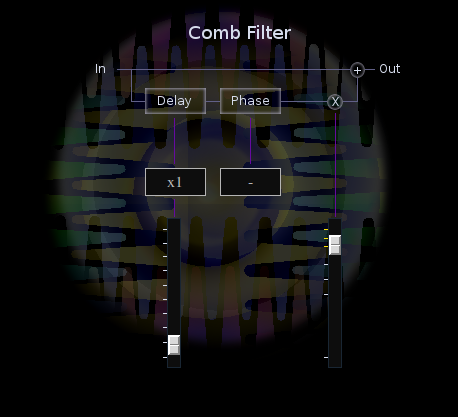

Comb Filter

| Home | Contents | Synth Catalog | Previous: Chronos Delay | Next: Crusher Distortion |
Comb is a simple static comb filter effect. The signal is split to two paths. On one path a delay between 0 and 100ms is applied. The delayed signal is optionally inverted and scaled by a gain factor before being summed to the original signal.
Busses
- inbus - audio input
- outbus - audio output
Parameters
- delayScale - one of 0.001, 0.010 or 0.100<.li>
- delay - 0.0 .. 1.0
- phase - one of -1 or +1
- wet - delayed signal gain, 0.0 .. 2.0
| Home | Contents | Synth Catalog | Previous: Chronos Delay | Next: Crusher Distortion |